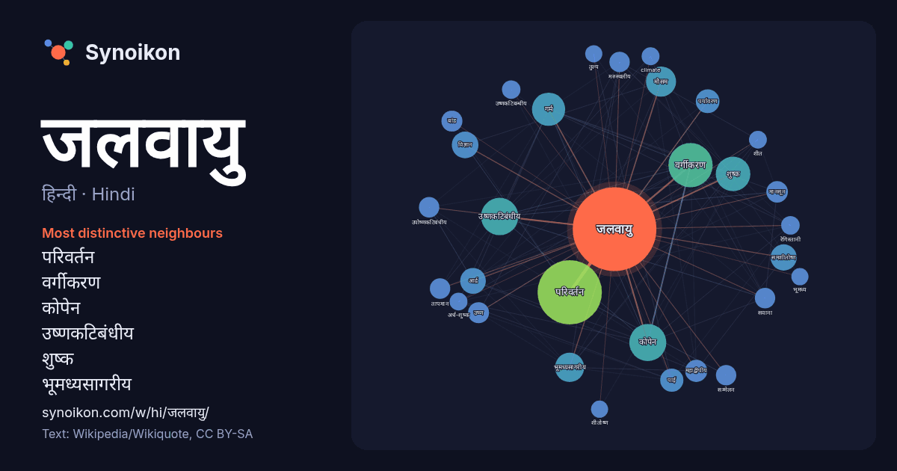

हिन्दी · Hindi · popular word
जलवायु
“climate” · The words found around it in 989 instances from Hindi Wikipedia, Wikiquote.

Most distinctive neighbours
- परिवर्तन 75×
- वर्गीकरण 62×
- कोपेन 54×
- उष्णकटिबंधीय 50×
- शुष्क 42×
- भूमध्यसागरीय 34×
- गर्म 33×
- समशीतोष्ण 28×
- आर्द्र 26×
- मौसम 26×
- महाद्वीपीय 19×
- बांड 18×
- मानसून 18×
- उष्ण 18×
- मरुस्थलीय 18×
- सवाना 18×
- उपोष्णकटिबंधीय 17×
- पर्यावरण 17×
- पाई 15×
- उष्णकटिबन्धीय 15×
× = how many times more often than in general Hindi Wikipedia text.
Most frequent neighbours
- परिवर्तन 169
- वर्गीकरण 80
- उष्णकटिबंधीय 57
- कोपेन 56
- क्षेत्र 50
- शुष्क 49
- गर्म 45
- मौसम 37
- अनुसार 35
- भूमध्यसागरीय 35
- कारण 29
- विज्ञान 29
- समशीतोष्ण 28
- आर्द्र 27
- प्रकार 25
- पर्यावरण 23
- देश 22
- पाई 22
- क्षेत्रों 21
- महाद्वीपीय 20
In context
- विषुवतीय जलवायु मौनसूनी जलवायु उष्ण मरुस्थली जलवायु उपोष्ण तृणभूमि जलवायु भूमध्यसागरीय जलवायु शीत मरुस्थलीय जलवायु टुण्ड्रा जलवायु "जलवायु परिवर्तन है Wikipedia snippets · जलवायु
- कोपेन जलवायु वर्गीकरण जलवायु आकलन के लिए प्रयोग किया जाने वाला सबसे अधिक प्रयोगनीय मौसम वर्गीकरण है। इसका विकास जर्मन मौसमवेत्ता व्लादिमिर कोपेन ने 1900 Wikipedia snippets · कोपेन जलवायु वर्गीकरण
- भूमध्य जलवायु (mediterranean climate) वह जलवायु है जो भूमध्य द्रोणी क्षेत्र में व्यापक है। भूमध्य सागर के अलावा कैलिफ़ोर्निया के तटवर्ती क्षेत्र, पश्चिमी Wikipedia snippets · भूमध्यसागरीय जलवायु
- स्थानीय स्तर पर उच्चावच का प्रभाव काफ़ी भिन्न स्थानीय जलवायु की रचना कर सकता है। भारतीय जलवायु में वर्ष में पाँच ऋतुएँ होती हैं: गर्मी, वर्षा, शरद, शीत Wikipedia snippets · भारत की जलवायु
- मरुस्थलीय जलवायु अथवा रेगिस्तानी जलवायु पृथ्वी के उन भागों पर विस्तृत जलवायु है जहाँ वर्षण की मात्रा वाष्पीकरण से कम होती है। बहुधा ये क्षेत्र रेत के मैदान Wikipedia snippets · मरुस्थलीय जलवायु
- विश्व भर में वितरित हो जाती हैं तथा अलग-अलग क्षेत्रों की जलवायु को प्रभावित करती है। कारक जो जलवायु में परिवर्तन के जिम्मेदार होते हैं जिनमे सौर विकिरण में Wikipedia snippets · जलवायु परिवर्तन
- उत्तराखण्ड की जलवायु यहाँ की भूसंरचना और उठाव के साथ-साथ बदलती है, लेकिन यह प्रदेश ठण्डी जलवायु प्रदेश की श्रेणी में आता है। यहाँ के ऊँचे हिमालयी क्षेत्रों Wikipedia snippets · उत्तराखण्ड की जलवायु
- तथा दक्षिण में 5°अक्षांश से 10° अक्षांश तक विस्तृत जलवायु प्रदेश को विषुवत रेखीय भूमध्य रेखीय जलवायु प्रदेश कहते हैं।इसका विस्तार कभी कभी 15° से 20° अक्षांश Wikipedia snippets · भूमध्यरेखीय जलवायु
More Hindi words
- इतिहास
- ईश्वर
- कार्य
- कुत्ता
- गर्मी
- गाना
- घंटी
- घड़ी
- घोड़ा
- चाय
- चित्रकला
- छाया
- जंगल
- जीवन
- तूफ़ान
- दर्पण
- द्वीप
- नक्षत्र
- नमक
- परिवार
- पहाड़
- पानी
- पैसा
- प्रकृति
- बगीचा
- बिल्ली
- भाषा
- भोजन
- माता
- मानचित्र
- मृत्यु
- मौन
- रेगिस्तान
- रेलगाड़ी
- रोटी
- वर्षा
- विज्ञान
- शक्ति
- शरद
- शहद
- शहर
- सड़क
- सत्य
- समय
- सर्दी
- सेतु
- स्वर्ण
- स्वास्थ्य
- हृदय
Precomputed on 2026-10-09 with default settings (±5 words, medium corpus). The interactive map can refresh it with live data.